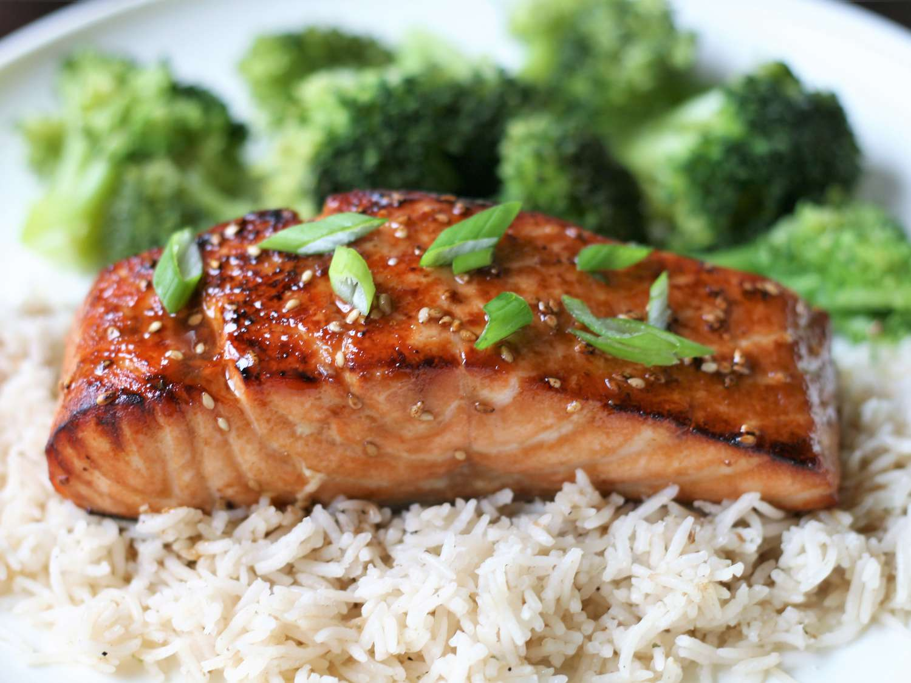

Teriyaki Salmon

This Teriyaki Salmon, with its irresistible sweet and savory marinade, will quickly become a staple in your dinner rotation. It's sure to please even the pickiest of eaters.
Below you will find a detailed ingredient list and step-by-step instructions in the recipe below.
Ingredients
- ¼ cup of sesame oil.
- ¼ cup of lemon juice.
- ¼ cup of soy sauce.
- 2 tablespoons of brown sugar, or more depending on your taste.
- 1 tablespoon of sesame seeds.
- 1 teaspoon of ground mustard.
- 1 teaspoon of ground ginger.
- ¼ teaspoon of garlic powder.
- 4 (6 ounce) salmon steaks.
Preparation and Cooking Steps
- Mix sesame oil, lemon juice, soy sauce, brown sugar, sesame seeds, ground mustard, ginger, and garlic powder in a small saucepan over low heat. Bring to a simmer, stirring until sugar has dissolved. Set aside ¼ cup of marinade for basting.
- Pour remaining marinade into a resealable plastic bag. Add salmon steaks, coat with marinade, squeeze out excess air, and seal the bag. Marinate in the refrigerator for 1 to 2 hours.
- Set an oven rack about 6 inches from the heat source and preheat the oven's broiler.
- Broil salmon steaks under the preheated broiler for 5 minutes, brushing salmon with reserved marinade. Turn and continue to broil until salmon is opaque and flakes easily, about 5 more minutes. Brush with marinade.
Return to Homepage